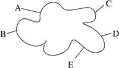
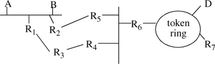

Networking Security Networking Security Networking Security Security Networking Security Networking Security Networking Charlie Kaufman Radia Perlman Mike Speciner Prentice Hall Network Security: Private Communication in a Public World, Second Edition Networking Security Networking Security Networking Security Security Networking Security Networking Security Networking Charlie Kaufman Radia Perlman Mike Speciner Prentice Hall Network Security: Private Communication in a Public World, Second Edition
1.5. Primer on Networking
You have to know something about computer networks to understand computer network security, so we're including this primer. For a more detailed understanding, we recommend PERL99, TANE96, COME00, STEV94, KURO00.
Networks today need to be very easy to use and configure. Networks are no longer an expensive educational toy for researchers, but instead are being used by real people. Most sites with networks will not be able to hire a full-time person with networking expertise to start and keep the network running.
1.5.1. OSI Reference Model
Somehow, a book about computer networks would seem incomplete without a picture of the OSI (Open Systems Interconnection) Reference Model, so here it is.
Figure 1-1. OSI Reference Modelapplication layer | presentation layer | session layer | transport layer | network layer | data link layer | physical layer |
The OSI Reference Model is useful because it gives some commonly used terminology, though it might mislead you into thinking that there is only one way to construct a network. The reference model was designed by an organization known as the International Standards Organization (ISO). The ISO decided it would be a good idea to standardize computer networking. Since that was too big a task for a single committee, they decided to subdivide the problem among several committees. They somewhat arbitrarily chose seven, each responsible for one layer. The basic idea is that each layer uses the services of the layer below, adds functionality, and provides a service to the layer above. When you start looking at real networks, they seldom neatly fit into the seven-layer model, but for basic understanding of networking, the OSI Reference Model is a good place to start.
physical layer. This layer delivers an unstructured stream of bits across a link of some sort. data link layer. This layer delivers a piece of information across a single link. It organizes the physical layer's bits into packets and controls who on a shared link gets each packet. network layer. This layer computes paths across an interconnected mesh of links and packet switches, and forwards packets over multiple links from source to destination. transport layer. This layer establishes a reliable communication stream between a pair of systems across a network by putting sequence numbers in packets, holding packets at the destination until they can be delivered in order, and retransmitting lost packets. session layer. The OSI session layer adds extra functions to the reliable pair-wise communication provided by the transport layer. Most network architectures do not have or need the functionality in this layer, and it is not of concern to security, so for the purposes of this book we can ignore it. presentation layer. This layer encodes application data into a canonical (system-independent) format and decodes it into a system-dependent format at the receiving end. application layer. This is where the applications that use the network, such as web surfing, file transfer, and electronic mail, reside.
A layer communicates with the equivalent layer in a different node. In order to get data to a peer layer, though, the layer at the transmitting node gives the data to the layer below it (on the same node), which adds a header containing additional information if necessary, and that layer in turn gives it to the layer below. As the packet is received by the destination node, each layer reads and strips off its own header, so that the packet received by layer n looks to that layer just like it did when it was sent down to layer n-1 for transmission.
This seven-layer model is the basis for a lot of the terminology in networking, and a good first step towards understanding networks, but today's network protocols do not neatly fit this model. Throughout the book we sometimes use the OSI terminology by discussing things such as encryption at layer 2 vs. layer 3 vs. layer 4, or use the terms data link layer, or transport layer.
1.5.2. IP, UDP, and TCP
Today the most common protocols are the ones standardized by the IETF (Internet Engineering Task Force). All the IETF documents are on-line and freely available from the web site www.ietf.org. The protocols are specified in documents known as RFCs. (RFC is an abbreviation for "Request for Comments", but the time to comment is when the documents are in the more preliminary "internet draft" stage. Nobody wants to hear your comments on RFCs.)
The IETF's protocol suite is usually referred to as the "TCP/IP suite", after the most common layer 3 (IP) and layer 4 (TCP) protocols at the time the suite was being nicknamed. IP (Internet Protocol), the layer 3 protocol, is defined in RFC 791. Its job is to deliver data across a network. To get a letter mailed with the postal service, you put it in an envelope that specifies the source and destination address. Similarly, the IP layer adds an envelope (a header) to the data that specifies the source and destination addresses.
But the IP address only specifies the destination machine. There might be multiple processes at the destination machine all communicating across the network, so it's necessary to also specify which process should receive the data. This is similar to putting an apartment number on the envelope in addition to the street address. IP doesn't identify the processes, but instead has a 1-octet field that specifies which protocol should receive the packet, and the rest of the information necessary to identify the destination process is contained in the layer 4 header, in the PORT fields.
The two most important layer 4 protocols in the IETF suite are TCP (Transmission Control Protocol, defined in RFC 793) and UDP (User Datagram Protocol, defined in RFC 768). TCP sends an unlimited size stream of data, reliably (either all data is delivered to the other end without loss, duplication, or misordering, or the connection is terminated). UDP sends limited-sized individual chunks, with best-effort service. Both TCP and UDP have fields for SOURCE PORT and DESTINATION PORT, which specify the process to whom the data belongs. TCP additionally has sequence numbers and acknowledgments to ensure the data arrives reliably.
Some port numbers are "well-known", i.e., permanently assigned to a particular service, whereas others are dynamically assigned. Being able to contact someone at a well-known port makes it easy to establish communication. In contrast, if Alice and Bob were going to attempt to communicate by going to public telephones wherever they happened to be, they'd never be able to communicate, since neither one would know what number to call. But if one of them were listening at a well-known telephone number, then the other could call from anywhere. This is very similar to the use of well-known ports.
To communicate with a particular service, say the telnet service, at some machine at IP address x, you'd know that telnet uses TCP, and is always assigned to port 23. So in the IP header, you'd specify x as the destination address, and 6 (which means TCP) as the protocol type. In the TCP header, you'd specify port 23 as the destination port. Your process would be at a dynamically assigned port, but the recipient process at node x would know which port to reply to by copying the port from the source port in the received TCP header.
This will all become much more relevant when we discuss firewalls in Chapter 23 Firewalls, and how they can distinguish telnet packets (which firewall administrators would usually like to block) from, say, email packets (which firewall administrators would usually like to allow).
1.5.3. Directory Service
Having a telephone line into your house means you can access any phone in the world, if you know the telephone number. The same thing is true, more or less, in computer networks. If you know the network layer address of a node on the network, you should be able to communicate with that node. (This isn't always true because of security gateways, which we'll discuss in Chapter 23 Firewalls.) But how do you find out another node's network layer address? Network layer addresses are not the kind of things that people will be able to remember, or type. People instead will want to access something using a name such as File-Server-3.
This is a similar problem to finding someone's telephone number. Typically you start out by knowing the name of the person or service you want to talk to, and then look the name up in a telephone book. In a computer network there is a service which stores information about a name, including its network layer address. Anything that needs to be found is listed in the service. Anything that needs to find something searches the service.
We call such a service a directory, though some people like to reserve the term "directory" for something in which you search based on an attribute (e.g., "find all the people who live on Main Street") rather than look up something based on knowing its name. Those people would call a simple service in which you look up information (rather than do complex searches) a naming service. We see no reason to make that distinction. It might be nice to search for all items that match a certain attribute, but usually the name will be known, and the attributes of that name will be fetched.
Rather than keeping all names in one directory, the directory service is typically structured as a tree of directories. Usually a name is hierarchical, so that the directory in which the name can be found is obvious from the name. For example, an Internet name looks like radia@east.sun.com. The top level consists of pointers to the directories com for commercial enterprises, edu for educational institutions, gov for U.S. government, and various country names. Under com, there are various company names.
Having multiple directories rather than keeping all names in one directory serves two purposes. One is to prevent the directory from getting unreasonably large. The other reason is to reduce name collisions (more than one object with the same name). For instance, when you're looking up a telephone number for your friend John Smith, it's bad enough trying to figure out which John Smith is the one you want if you know which town he lives in and the telephone company has separate directories for each town, but imagine if the telephone company didn't have separate books for each town and simply had a list of names and telephone numbers!
Ideally, with a hierarchy of directories, name collisions could be prevented. Once a company hired one Radia Perlman, they just wouldn't hire another. I2 think that's reasonable, but someone with a name like John Smith might start having problems finding a company that could hire him.
Now why did you name your baby John? Every Tom, Dick, and Harry is named John.
ÂSam Goldwyn
For electronic mail addresses, conflicts must be prevented. Typically, companies let the first John Smith use the name John@companyname for his email address, and then perhaps the next one will be Smith@companyname, and the next one JSmith@companyname, and the next one has to start using middle initials. But for directories of names, there is usually no way to avoid name collisions within a directory. In other words, both John Smiths will use the same name within the company. Then, just like with a telephone book and multiple John Smiths, you have to do the best you can to figure out which one you want based on various attributes (such as in the telephone directory, using the street address). And just like in "real life," there will be lots of confusion where one John Smith gets messages intended for a different John Smith.
The directory service is very important to security. It is assumed to be widely available and convenient to accessÂotherwise large-scale networking really is too inconvenient to be practical. The directory service is a convenient place to put information, such as a user's public cryptographic key. But the directory service, although convenient, is not likely to be very secure. An intruder might tamper with the information. The magic of cryptography will help us detect such tampering so that it will not be necessary to physically secure all locations that store directory service information. If the information is tampered with, good guys will detect this. It might prevent good guys from accessing the network, since they won't be able to find information they can trust, but it will not allow bad guys unauthorized access.
1.5.4. Replicated Services
Sometimes it is convenient to have two or more computers performing the same function. One reason is performance. A single server might become overloaded, or might not be sufficiently close to all users on a large network. Another reason is availability. If the service is replicated, it does not matter if some of the replicas are down or unavailable. When someone wants to access the service provided, it doesn't matter which of the computers they reach. Often the user can't even tell whether there's a single copy of the service or there are replicas.
What are the security issues with a replicated service? You'd want the user to have the same authentication information regardless of which replica was authenticating the user. If authentication information is stored at each replica, then coordinating the databases, for example after a change password command, can be tricky. And if the identical exchange will work with any of the replicas, then having an eavesdropper repeat the authentication handshake with a different replica might be a security problem.
1.5.5. Packet Switching
A really naive assumption would be that if people wanted computer A to talk to computer B, they'd string a wire between A and B. This doesn't work if networks get large, either in number of nodes (n2 wires) or physical distance (it takes a lot of wire to connect each of 10000 nodes in North America with each of 10000 nodes in Asia). So in a network, messages do not go directly from sender to recipient, but rather have to be forwarded by various computers along the way. These message forwarders are referred to as packet switches, routers, gateways, bridges, and probably lots of other names as well.
A message is generally broken into smaller chunks as it is sent through the network. There are various reasons for this.
Messages from various sources can be interleaved on the same link. You wouldn't want your message to have to wait until someone else finished sending a huge message, so messages are sent a small chunk at a time. If the link is in the process of sending the huge message when your little single-chunk message arrives, your message only has to wait until the link finishes sending a chunk of the large message. Error recovery is done on the chunk. If you find out that one little chunk got mangled in transmission, only that chunk needs to be retransmitted. Buffer management in the routers is simpler if the size of packets has a reasonable upper limit.
1.5.6. Network Components
The network is a collection of packet switches (usually called routers) and links. A link can either be a wire between two computers or a multi-access link such as a LAN (local area network). A multi-access link has interesting security implications. Whatever is transmitted on the link can be seen by all the other nodes on that link. Multi-access links with this property include Ethernet (also known as CSMA/CD), token rings, and packet radio networks.
Connected to the backbone of the network are various types of nodes. A common categorization of the nodes is into clients, which are workstations that allow humans to access the resources on the network, and servers, which are typically dedicated machines that provide services such as file storage and printing. It should be possible to deploy a new service and have users be able to conveniently find the service. Users should be able to access the network from various locations, such as a public workstation a company makes available for visitors. If a person has a dedicated workstation located in one location, such as an office, it should be possible with a minimum of configuration for the user to plug the workstation into the network.
Historically, another method for users to access a network is through a dumb terminal. A dumb terminal is not a general-purpose computer and does not have the compute power to do cryptographic operations. Usually a dumb terminal hooks directly into a host machine, or into a terminal server which relays the terminal's keystrokes via a network protocol across the network to the host machine (the machine the user logs into). Very few dumb terminals remain today, but their legacy lives on in the form of software-based terminal emulators implemented in most PCs and workstations. Even though these devices are capable of complex calculations, for backward compatibility, they don't do them.
1.5.7. Destinations: Ultimate and Next-Hop
A network is something to which multiple systems can attach. We draw it as a cloud since, from the point of view of the systems connected to it, exactly what goes on inside is not relevant. If two systems are on the same cloud, one can send a message to the other by attaching a header that contains a source address and a destination address, much like putting a letter into an envelope for delivery by the postal service.

But how do you connect to the network? With a point-to-point link to a packet switch inside the network, things are reasonably simple. If A wants to send a message to B, A will put A as source address and B as destination address and send the message on the point-to-point link. But what if A is connected on a LAN? In that case, in order to transmit the packet through the network, A has to specify which of its neighbors should receive the message. For example:

If A wants to send a message to D it has to know (somehowÂif you care how, you can read my2 book [PERL99]) that the appropriate neighbor for forwarding the packet is R2. So when A transmits the message there are two destinations: R2 as the next recipient and D as the ultimate recipient. A reasonably simple way of thinking about this is that the data link layer worries about transmission across a single link. The data link header has a source address and a destination address which indicate the transmitter on that link and the receiver on that link. The network layer worries about transmission across a multi-hop network. It has a header that carries the original source and ultimate destination. The data link header is removed each time a message is received, and a new data link header is tacked onto the message when it is forwarded to the next hop.
When A transmits the packet, the network header has source A, destination D. The data link header has source A, destination R2. R2 forwards the packet to R5. Since R2 is connected to R5 with a point-to-point link, the data link header will not have addresses. But when R5 forwards the packet to R6 across the LAN, the network layer header will (still) be source A, destination D. The data link header will be source R5, destination R6. When R6 forwards it (across the token ring LAN) the network header is still the same, and the data link header has source R6, destination D.
Most likely A's data link address will look different from its network layer address, so it's a bit sloppy to say source A in both the data link header and network header. But this is all irrelevant to security. Fascinating in its own right, but irrelevant to this book.
The network layer header can be thought of as an envelope for the message. The data link header is an outer envelope. We've described the case of two envelopesÂa network header inside a data link header. The world can be even more complicated than this. In fact, the "data link layer" might be a multi-hop network with multi-hop networks inside it as well. So a message might wind up with several envelopes. Again this is fascinating stuff but irrelevant to this book.
1.5.8. Address Structure
What do addresses look like? In terms of security, the main issue is how difficult it is to forge a source address, and how easy it is to arrange for the network to deliver packets to you when they are addressed to someone other than you. For instance, think of a letter as having a source address (the return address, it's called in paper mail) and a destination address. It's easy to send a letter to anyone and put President, White House, USA as the source address. It's harder to arrange to receive mail sent to President, White House, USA if you are not the U.S. President, especially if you don't live in the White House, and most likely more difficult the further you live from the address you'd like to impersonate. Network addresses are usually hierarchical, just like a postal address. If we think of the address as specifying country/state/city/person, then in general it will be easier to arrange to receive someone else's messages if you reside in the same city (for instance by bribing a postal employee), and most difficult if they're in a different country.
Forging source addresses is easy in most network layers today. Routers can be built more defensively and do a sanity check on the source address, based on where they receive the packet from. After some highly publicized denial of service attacks, where vandals overwhelmed victim sites with nuisance traffic, many routers are now deployed with this feature of checking source addresses and discarding traffic received from an unexpected direction. It's not a perfect solution, though. As typically implemented, it requires extra configuration (so the routers will know what source addresses to expect from which directions), somewhat violates my2 philosophy (as a layer 3 specialist) that routers should be self-configuring and adapt to topological changes, and slows down the router because it has to make an extra check when forwarding a packet.
|